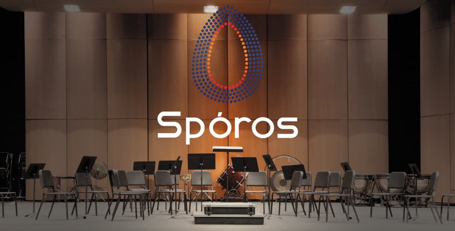

Germinação
Um espaço para novos projetos e colaborações começarem.

Projeto instrumental · VoxLaci
Um projeto instrumental que ainda está a germinar.
Porquê este nome?
Spóros significa semente, em grego. Ao contrário dos animais, as plantas não têm limite na forma como procuram condições favoráveis à vida: dispersam as suas sementes pela terra, pela água, até entre rochas — e essas sementes têm ainda um mecanismo próprio de proteção, que as impede de germinar demasiado cedo, em condições desfavoráveis como o frio ou a neve. É dessa imagem que nasce este projeto instrumental da VoxLaci: um lugar onde diferentes instrumentistas — sementes — se combinam para formar múltiplas florestas, os programas de música que vão nascendo do encontro entre eles. Spóros abre a linguagem da comunidade VoxLaci para além da voz, criando novas possibilidades de diálogo entre canto e instrumentos, músicos de diferentes gerações e projetos futuros. Não queremos apenas apresentar música. Queremos criar raízes — e condições para que alguma coisa cresça depois dela.
Instrumentistas
Spóros é o projeto instrumental da comunidade VoxLaci, que abre a linguagem coral a instrumentistas e a colaborações entre voz e instrumento, com trabalho organizado por projeto, em Cascais.
Spóros é o projeto instrumental da comunidade VoxLaci, criado para abrir a linguagem coral a instrumentistas, novos repertórios e colaborações entre voz e instrumento. Como em toda a VoxLaci, ser amador tem aqui o sentido mais antigo da palavra: aquele que ama.
Porque tocar aqui
Um espaço para novos projetos e colaborações começarem.
Encontro entre repertório coral e linguagem instrumental.
Músicos de diferentes idades e percursos lado a lado.
A sua voz começa aqui
Outros caminhos